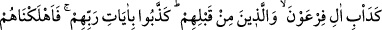
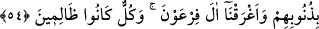

Haddâdî der ki: Allah onları açken doyurdu. Korkudan emin eyledi. Onlara kendi
içlerinden bir peygamber gönderdi. Konuştukları dilden bir kitap indirdi. Buna karşılık
onlar bütün bu nimetlere şükretmeyip nankörlük ettiler. Bu nimetleri Allah’tan gelen
nimetler olarak bilmediler. Allah da içinde bulundukları nimetleri değiştirip Bedir’de
cezalarını verdi.
“ve bir de Allah işitendir, bilendir.” Yani onların söz ve fiillerinden yaptıklarını ve
terk ettiklerini, önceki ve sonraki hallerini bilip işitmesi sebebiyle bu böyledir. Ona
göre de her millete nimetin kalması ya da gitmesi hususunda lâyık olan muâmeleyi
yapar.
54. Firavun âilesi ve onlardan öncekilerin âdeti üzere (davrandılar). Onlar
Rablerinin âyetlerini yalanladılar da onları günahlarından ötürü helâk ettik ve
Firavun ailesini (denizde) boğduk. Hepsi zâlimlerdi.
“Firavun âilesi ve onlardan öncekilerin âdeti üzere (davrandılar).” Bu ifade, tekid
için tekrarlanmıştır. “Onlar Rablerinin âyetlerini yalanladılar da onları
günahlarından ötürü helâk ettik ve Firavun ailesini (denizde) boğduk.” Âyette
Firavun ve ailesinin helâk edildiği belirtildikten sonra tekrar onların boğulmalarının
zikredilmesi, boğulma olayının ne feci bir hadise olduğunu bildirmek içindir.
Denizde boğulan Kıptîler’in ve öldürülen Kureyş müşriklerinin “hepsi” küfür ve
masiyetlerle kendilerini helâke maruz bırakan veya îman ve tasdikin yerine inkârı ve
yalanlamayı koyan “zâlimlerdi.”
Âyetin işârî yorumu şöyledir: Diğer kavimlerden ayrı olarak sadece Firavun ve kavmi
helâk denizinde boğulmuştur. Buna sebep Firavun’un rab olduğu iddiasında bulunması
ve kavminin de bunu ikrar edip gönülden tasdik etmeleridir. Bu ise rûhaniyet cevherinin
nefsânî sıfatların istilâsıyla bozulmasının nihâî noktasıdır. Zulüm ve küfürde Firavun ve
kavminin seviyesine ulaşmamış olsalar da Allah’ı inkâr eden ve âyetlerini
yalanlayanların hepsi, fıtrî istidadlarını ifsâd etmeleri sebebiyle kendilerine zulmetmiş
kimselerdir.
Sen sen ol fıtrî istidadını muhafaza et. İstidadının gereğini de yerine getirerek O’na
çok şükret. Seni fesada ve helâke sürükleyecek kötü muâmelelerden uzak dur. Kuru bir
inad, hakka cephe almana ve onu kabûl etmemene sebep olmasın. İnad hiç kimseye,
özellikle de sâlike yaraşmaz.
Başında şüphe bulunan kimse
Zannetme ki Hakkı sözü/doğruyu işitir